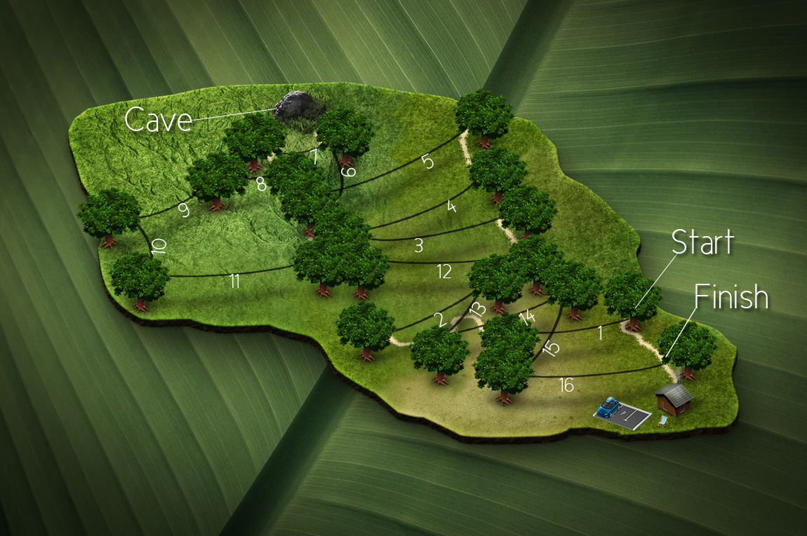
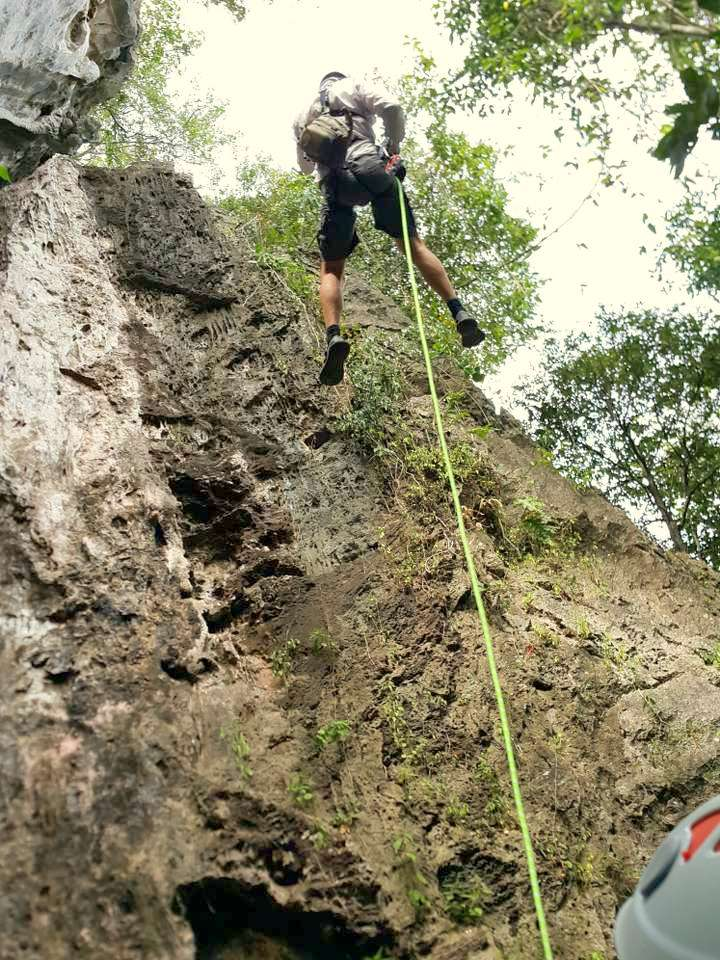
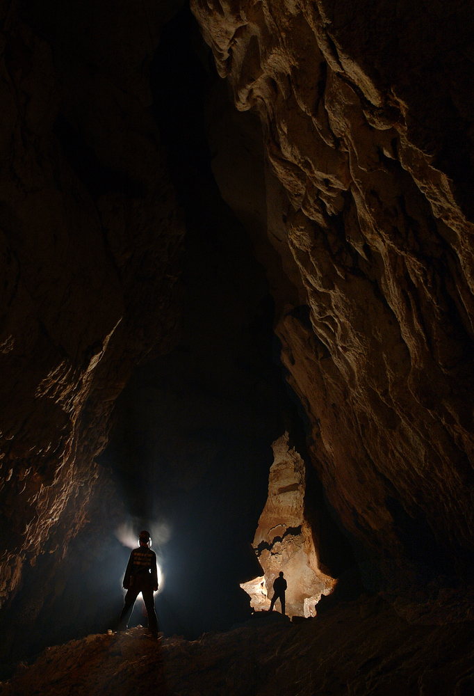

Zip Fiji

A party above the trees!
Everyone loves great views, and great experiances, so come to Zip Fiji.
Would you like to have fun?
Well Zip Fiji is the best place
Zip Fiji, 16 Different Ziplines,a Cannibal Cave,4 Abseils, and a Walking Tour
- Zip Nadi
- $235 FJD (per person)
- 16 Ziplines
- Complementry Transfers
- Lunch & Refreshments

- Abseil Nadi
- $245 FJD (per person)
- 4 Abseils
- Complementry Transfers
- Lunch & Refreshments

- Caves Nadi
- $155 FJD (per person)
- Walking Tour
- Complementry Transfers
- light Refreshments

- Zip Pacific Habour
- $235 FJD (per person)
- Complementry Transfers
- light Refreshments
- Located just 25 minutes from Pacific Harbour, discover Fiji's original zip line!
Located just 35 minutes from downtown Nadi, the largest and newest zip line in Fiji.
Duration: 3hours
Contact
Book your Fiji Zipline Adventure now:
Call +679-672-6045 or +679-930-0545 or book online